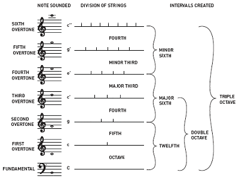

Pythagoras
Pythagoras
Pythagoras believed that math and music had a relationship with each other. Pythagoras was a lyre player which led him to study the relationship between pitch and the length of string. Pythagoras discovered that whole number ratios have to deal with musical notes.
Pythagoras discovered that each interval has a whole number ratio associated with it. He described the building blocks for musical harmony as the octave, the perfect fifth, the perfect forth, and the major third. He bases his tuning on the stacking of perfect fifths in a three to two ratio.